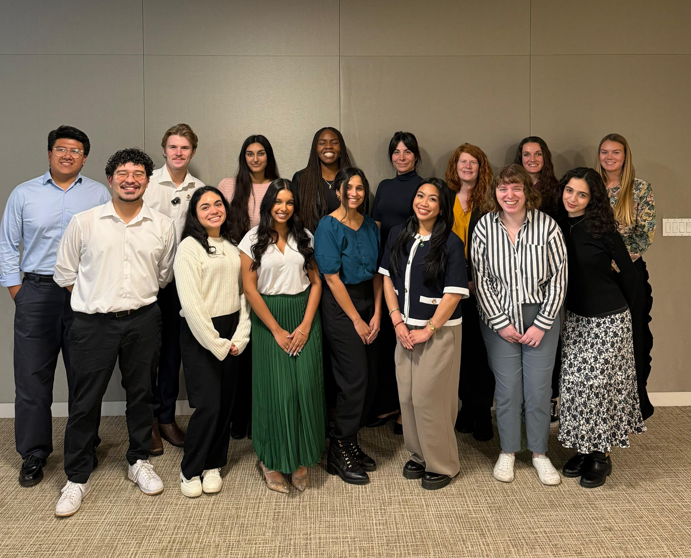
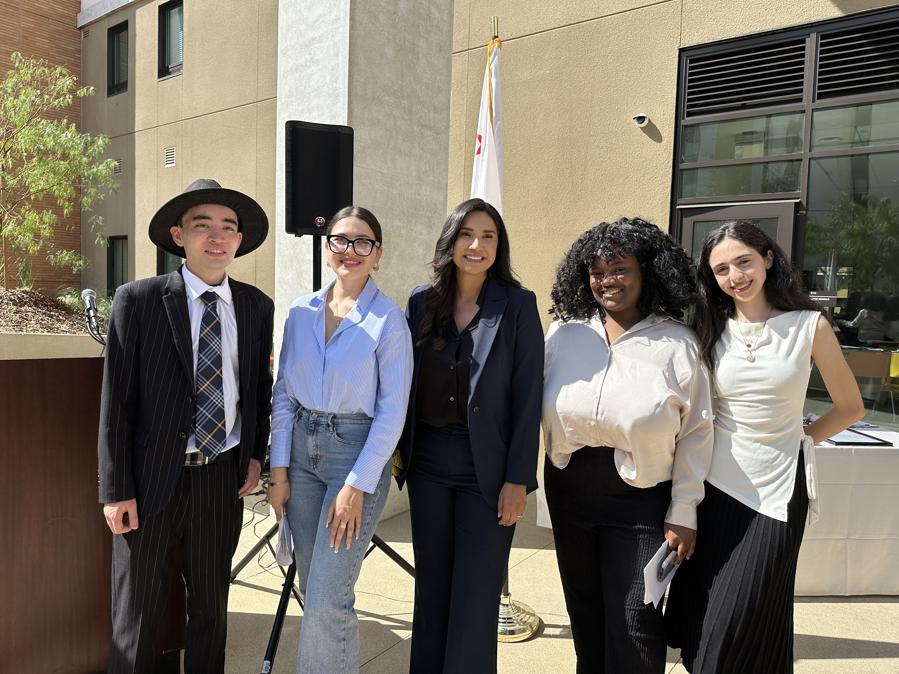

ASUCR, or the Associated Students of UCR, serves as the university's student government. As ASUCR President, I have a wide range of responsibilities (some of which can feel never-ending), but above all, my main role is one of advocacy. I work with UCR and UC-wide administrators to advocate for students on key needs and issues of the campus community. I have especially focused my work on advocating for nontraditional student communities, including work with student parents (Basic Needs), students with disabilities (SDRC), formerly incarcerated students (Underground Scholars), and undocumented students (Undocumented Student Programs). Overall, I work to bring greater attention and awareness to these groups when decisions are made by administrators that affect the broader campus community, and UC system, as a whole!